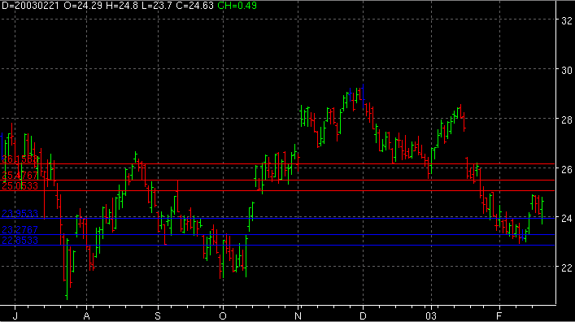

Pivot Point - PP
Parameters:
- Color Resistance - The resistance color
- Color Support - The support color
- Label First Resistance - The text to identify the first resistance plot
- Label First Support - The text to identify the first support plot
- Label Second Resistance - The text to identify the second resistance plot
- Label Second Support - The text to identify the second support plot
- Label Third Resistance - The text to identify the third resistance plot
- Label Third Support - The text to identify the third support plot
Description:
Formula Reference:
| Syntax |
PP(PP OUTPUT) |
| Function |
PP OUTPUT can be one of 6 values (FR, SR, TR, FS, SS, TS) |
| Example |
PP(FR) will return the first
resistance plot. PP(TS) would return the third support plot. |